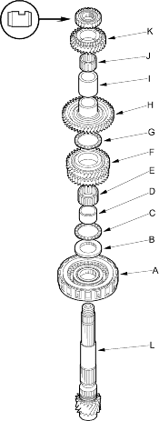
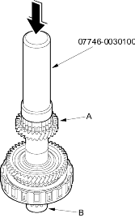
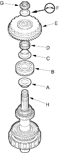

Driver 40 mm I.D., 07746-0030100
- Remove the countershaft transmission housing bearing (see page 14-177).
- Remove the O-rings from the countershaft.
- Install the 3rd clutch (A), splined washer (B), thrust needle bearing (C), 3rd gear collar (D), needle bearing (E), 3rd gear (F), thrust needle bearing (G), 2nd gear (H), 28 mm distance collar (I), needle bearing (J) and 4th gear (K) on the countershaft (L).

- Slide the reverse selector hub (A) over the countershaft (B), then press it into place with the special tool and a press.

- Install the reverse gear collar (A), transmission housing bearing (B), 1st gear collar (C), needle bearing (D), 1st gear/one-way clutch/park gear (E) and conical spring washer (F) on the countershaft sub-assembly (H).
